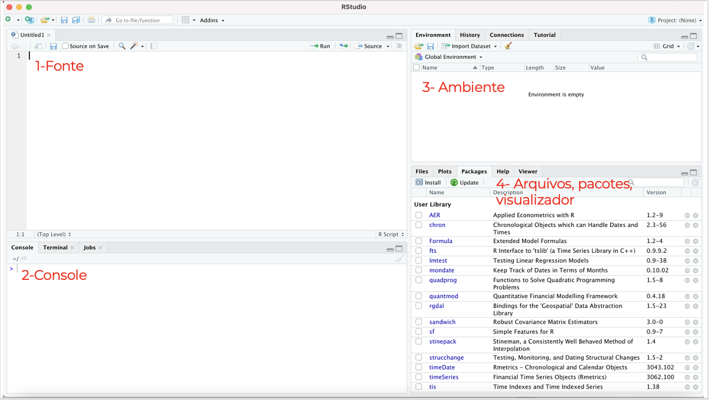
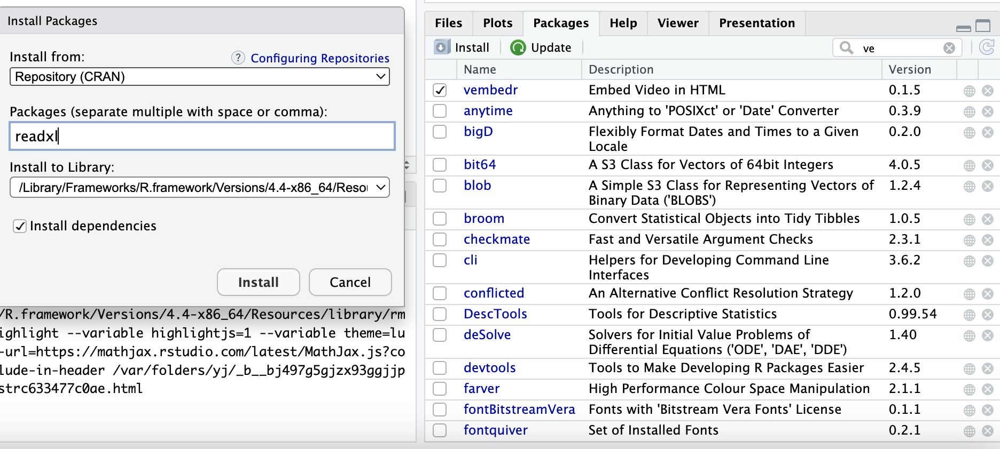
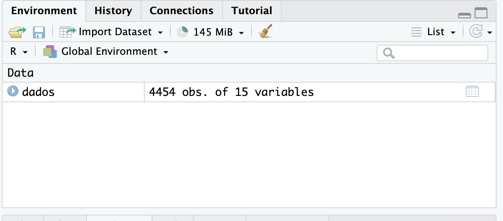
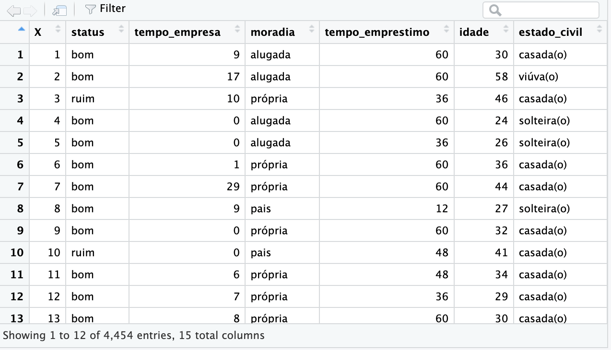

Chapter 2 Aula 1
Na primeira aula veremos como carregar e exportar dados no R, os principais tipos de dados.
2.1 Interface
O RStudio é um editor de texto especial que foi personalizado para facilitar o trabalho com R. Ele pode ser instalado no seu próprio computador ou você pode fazer login em um servidor RStudio compartilhado (por exemplo, um administrado pela sua universidade) a partir de um navegador web. De qualquer forma, a interface é basicamente a mesma e contém 4 painéis principais:

1-Fonte: Onde se escreve o código. No editor de código, você poderá escrever e editar os scripts. Script nada mais é do que uma sequência de comandos/ordens que serão executados em sequência pelo R
2-Console: Onde o código da fonte é avaliado pelo R. Pode-se também utilizar o console para realizar códigos rápidos, sem salvá-los.
3-Ambiente: Exibe os objetos e dados de trabalho.
4- Abas plots, packages
A aba Plots trará os gráficos gerados, possibilitando a exportação para alguns formatos diferentes, como .png e .pdf.
Na aba Files, você terá uma navegação de arquivos do seu comdrputa
Em Packages estão listados os pacotes instalados. Você pode verificar quais estão carregados e, caso necessário, poderá carregar algum pacote necessário para a sua análise. Também é possível instalar e atualizar pacotes.
2.2 Instalando pacotes
Pacotes no R são coleções de funções, dados e documentação desenvolvidas para ampliar as funcionalidades básicas do R. Pense nos pacotes como “plugins” ou “extensões” que você pode adicionar ao R para realizar tarefas específicas que não estão incluídas na instalação padrão do software.
Um pacote pode incluir:
Funções: Conjuntos de comandos que automatizam tarefas específicas.
Dados: Conjuntos de dados que podem ser usados para prática e exemplos.
Documentação: Instruções e exemplos que explicam como usar as funções do pacote
Pacotes podem ser através do comando install.packages (“nomedopacote”)
Lembrete: o nome do pacote sempre deve estar entre aspas.
Pacotes também podem ser instalados na aba “Packages” e em “Install”.
Uma nova janela abrirá, na qual podemos procurar o pacote desejado e instalá-lo.

Para a aula de hoje vamos instalar os seguintes pacotes:
2.3 Carregando pacotes
Para utilizar os pacotes instalados é necessário carregá-los antes através da função library(nomedopacote). Atenção: o nome do pacote não deve vir entre aspas, como na função de instalar.
Caso tente executar uma função de um pacote que não esteja carregado, o R responderá com uma mensagem de erro.
2.4 Carregar arquivos
2.4.1 Arquivos CSV
CSV significa comma separated values (valores separados por vírgulas) e consiste em um formato muito comum para dados que podem ser utilizados entre diferentes programas de software. Um arquivo CSV é um arquivo de texto simples que contém uma lista de dados, com cada valor separado por vírgula.
O R é capaz de ler um arquivo CSV sem carregar nenhum pacote. Podemos usar o comando read.csv() para carregar um arquivo.
O diretório do arquivo deve vir entre aspas.
A função sep= permite escolher o separador do arquivo csv.
2.5 Tipos de arquivos no R
2.5.1 Dataframe
DataFrame é uma estrutura de dados que organiza os dados em uma tabela bidimensional de linhas e colunas, como uma planilha. Os DataFrames são uma das estruturas de dados mais comuns na análise de dados moderna, pois são uma maneira flexível e intuitiva de armazenar e trabalhar com dados.
Uma vez o arquivo carregado, ele deve aparecer no painel “Environment”, no canto superior direito. O ícone de tabela no canto direito indica que se trata de um dataframe.

Para visualizá-lo, basta clicar no ícone. O dataframe indica as variáveis, o número de de linhas e colunas.

2.6 Tipos de variáveis
Existem diversos tipos de objetos, e cada tipo “armazena” um conteúdo diferente, desde tabelas de dados recém-carregados a textos, números, ou simplesmente a afirmação de verdadeiro ou falso (Boleano).
Repare nas atribuições acima. Usaremos a função class() para ver o tipo de cada uma: